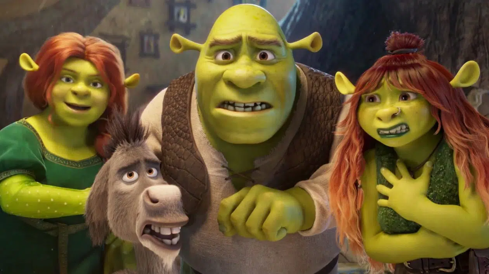

Shrek 5 : un teaser déçevant et visuellement moche.

Introduction
DreamWorks a enfin dévoilé un premier aperçu de Shrek 5, prévu pour le 23 décembre 2026. Après le succès du Chat Potté 2 et le retour de Po dans Kung Fu Panda 4, le studio tente de raviver l’une de ses franchises les plus iconiques. Mais ce teaser a laissé une impression mitigée...
Un retour après 15 ans
Le dernier film de la saga, Shrek 4 : Il était une fin, date de 2010. Quinze ans plus tard, DreamWorks relance son ogre vert, sous la supervision des réalisateurs Walt Dohrn, Conrad Vernon et Brad Ableson. Pour moderniser la licence, le teaser mise sur des références aux réseaux sociaux comme TikTok, Tinder et Snapchat.
Un teaser maladroit ?
Shrek a toujours su mélanger les anachronismes avec brio, mais ce teaser semble maladroit. Voir Shrek scroller sur un miroir magique à la manière d’un smartphone provoque un sentiment de gêne, peut-être accentué par un changement dans la charte graphique, aux textures plus lisses.
Un casting de retour avec quelques surprises
Heureusement, les voix originales reviennent : Mike Myers (Shrek), Cameron Diaz (Fiona) et Eddie Murphy (L’Âne) seront de la partie. Une nouvelle venue, Zendaya, devrait prêter sa voix à Felicia, la fille adolescente des ogres.
Que sait-on de l’histoire ?
Pour l’instant, l’intrigue reste secrète, mais Felicia pourrait jouer un rôle central. On attend également de découvrir qui incarnera ses deux frères, Farkle et Fergus.
La Bande-Annonce pour les plus courageux.
Si vous êtes assez courageux pour regarder le teaser, cliquez ICI
Conclusion
Si Shrek 5 suscite l’enthousiasme par son simple retour, son premier teaser laisse un goût amer. Reste à voir si DreamWorks saura ajuster le tir avant la sortie en décembre 2026.